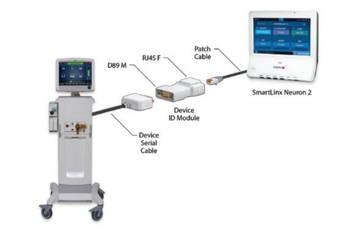

Die Digitalisierung im Gesundheitswesen hat in den letzten Jahren stark an Bedeutung gewonnen. Ein zentraler Bestandteil dieser Entwicklung ist die Integration medizinischer Geräte in Patientendatenmanagementsysteme (PDMS). Diese Integration ermöglicht eine effiziente, sichere und fehlerarme Erfassung, Speicherung und Auswertung von Patientendaten. Ziel ist es, den klinischen Alltag zu entlasten, die Versorgungsqualität zu verbessern und die Patientensicherheit zu erhöhen.
Krankenhäuser nutzen Patientenmanagementsysteme (PDMS) für Dokumentation, Labor und Patientenakten. Medizinische Geräte stammen von unterschiedlichen Herstellern (Beatmungsgeräte, Narkosegeräte, Überwachungsmonitore, EKG, EEG etc.). Ziel ist die automatisierte und sichere Übertragung der Gerätedaten ins PDMS.
Die Integration erfolgt über standardisierte Schnittstellen und Kommunikationsprotokolle, wie HL7, DICOM, FHIR und IEEE 11073. Diese sorgen für eine reibungslose Kommunikation zwischen Geräten und Informationssystemen. Middleware-Systeme oder Gateways werden eingesetzt, um Daten unterschiedlicher Geräte zu standardisieren und in das PDMS zu übermitteln.
Einige medizinische Geräte, wie Beatmungsgeräte oder Überwachungsmonitore, werden über serielle Schnittstellen (D89, RJ45 etc.) direkt mit einem Interface oder Gateway verbunden. Dies ermöglicht eine stabile Datenübertragung ins Krankenhausnetzwerk und anschließend ins PDMS.
Quelle: GE Healthcare PDF
Hier ist das Schulungsvideo auf YouTube:
Video ansehenDie Integration medizinischer Geräte in PDMS ist ein zentraler Schritt zum digitalen Krankenhaus. Sie ermöglicht eine effiziente, sichere und umfassende Nutzung medizinischer Daten. Trotz technischer und organisatorischer Herausforderungen überwiegen die Vorteile deutlich. Langfristig führt sie zu einer neuen Qualität in der medizinischen Versorgung.